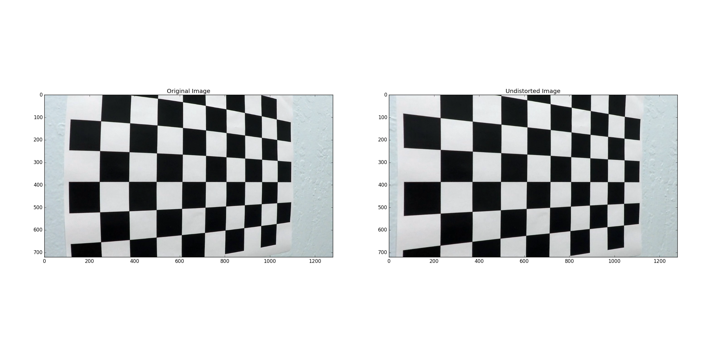

Advanced Lane Finding Project
The goals / steps of this project are the following:
###Camera Calibration
####1. Briefly state how you computed the camera matrix and distortion coefficients. Provide an example of a distortion corrected calibration image.
The code responsible for camera calibration is contained in static calibrate method of Camera class contained in src/camera.py file.
I start by preparing an array of "object points", which will be the (x, y, z) coordinates of the chessboard corners in the real world.
Here I am assuming the chessboard is fixed on the (x, y) plane at z=0, such that the object points are the same for each calibration image.
Thus, object_points is just a replicated array of coordinates, and real_object_points will be appended with a copy of it every time I successfully detect all chessboard corners in a test image. image_points will be appended with the (x, y) pixel position of each of the corners in the image plane with each successful chessboard detection.
I then used the output real_object_points and image_points to compute the camera calibration and distortion coefficients using the cv2.calibrateCamera() function. I applied this distortion correction to the test image using the cv2.undistort() function and obtained this result:

###Pipeline (single images)
####1. Provide an example of a distortion-corrected image.
Distortion correction is performed by previously calibrated camera object. To do that correct_distortions(image) method should be called. All it does is calling cv2.undistort(image, self._camera_matrix, self._dist_coefficients) function of opencv.
Example undistorted image is presented below:
####2. Describe how (and identify where in your code) you used color transforms, gradients or other methods to create a thresholded binary image. Provide an example of a binary image result.
I used a combination of color and gradient thresholds to generate a binary image. All the thresholding can be found in method called threshold(image) of a LaneDetector class. The methods I applied include:
The final result is a combination of three operations as shown below:
combined[((sobel_on_l_binary == 1) | ((sobel_on_s_binary == 1) & (s_binary == 1)))] = 255
Example result is shown in an image below:
####3. Describe how (and identify where in your code) you performed a perspective transform and provide an example of a transformed image.
The code responsible for preparing transformation matrices can be found in an initializer of LaneDetector class. I decided to hardcode the values so they properly works with images sized 1280x720.
Transformation matrices preparation code:
source_points = np.float32([[170, 720], [566, 450], [716, 450], [1120, 720]])
dest_points = np.float32([[350, 720], [200, 0], [1080, 0], [930, 720]])
self._transformation_matrix = cv2.getPerspectiveTransform(source_points, dest_points)
self._inverse_transformation_matrix = cv2.getPerspectiveTransform(dest_points, source_points)
This resulted in the following source and destination points:
| Source | Destination |
|---|---|
| 170, 720 | 350, 720 |
| 566, 450 | 200, 0 |
| 716, 450 | 1080, 0 |
| 1120, 720 | 930, 720 |
I verified that my perspective transform was working as expected by manually checking the results and verifying that the lane lines are parallel.
Example result of transformation:
####4. Describe how (and identify where in your code) you identified lane-line pixels and fit their positions with a polynomial?
Lane detection is performed in the update_lane_lines_positions method of LaneLine class. It comprises of the following steps:
In the first step I generated a histogram basing on the bottom half of an image in order to find base lane positions. It is assumed that a left lane can be found in a left half of an image, similarly, right lane can be found in the right half of an image. Base positions were determined by searching for the maximum values in a histogram's left and right parts.
It's shown in the following snippet:
histogram = np.sum(binary_warped_image[binary_warped_image.shape[0] / 2:, :], axis=0)
midpoint = np.int(histogram.shape[0] / 2)
left_lane_base_x_position = np.argmax(histogram[:midpoint])
right_lane_base_x_position = np.argmax(histogram[midpoint:]) + midpoint
Sliding window search is implemented in find_in(self, binary_warped_image, lane_current_x_position) method of LaneLine class. For each step all the pixels within window are detected. Window is re-centered if at least 50 pixels are found.
window_height = np.int(binary_warped_image.shape[0] / self._sliding_windows_nr)
for window in range(self._sliding_windows_nr):
lower_bound = binary_warped_image.shape[0] - (window + 1) * window_height
upper_bound = binary_warped_image.shape[0] - window * window_height
left_bound = lane_current_x_position - self._margin
right_bound = lane_current_x_position + self._margin
indices = (
(nonzeroy >= lower_bound) & (nonzeroy < upper_bound) &
(nonzerox >= left_bound) & (nonzerox < right_bound)
).nonzero()[0]
lane_indices.append(indices)
if len(indices) > self._recenter_threshold:
lane_current_x_position = np.int(np.mean(nonzerox[indices]))
Having all the pixels of a line found. A method fit_poynomial(x_points, y_points) is called. It uses numpy function fit_poly to find second order polynomial that fits given points best. I keep track of polynomial coefficients history in order to smooth the values, so the lines in a video appear more stable.
def fit_polynomial(self, x_points, y_points):
"""
Finds a polynomial that fits given points the best.
:param np.ndarray x_points: List of x points,
:param np.ndarray y_points: List of y points.
"""
if x_points.size == 0 or y_points.size == 0:
return
self._polynomial_coefficients_history.append(np.polyfit(y_points, x_points, 2))
if len(self._polynomial_coefficients_history) > self._smooth_iterations_nb:
self._polynomial_coefficients_history.pop(0)
If the method above successfully detected lane line, next iteration will use a quick search method based on using previously matched coefficients. The method is called quick_detect and looks for lane lines within a margin of 100 pixels from a line generated using currently fit polynomial.
def _quick_detect(self, binary_warped_image):
"""
Does a quicker search of lane lines basing on previously found fit.
:param np.ndarray binary_warped_image: Warped binarized image.
"""
nonzero = binary_warped_image.nonzero()
nonzeroy = np.array(nonzero[0])
nonzerox = np.array(nonzero[1])
margin = 100
lane_indices = (
(nonzerox > (self.generate_x_points(nonzeroy) - margin)) &
(nonzerox < (self.generate_x_points(nonzeroy) + margin))
)
x_points = nonzerox[lane_indices]
y_points = nonzeroy[lane_indices]
self.fit_polynomial(x_points, y_points)
Sanity check is based on a differences between polynomial coefficients. The values used in a check were found in a following way:
Example image with polynomial overplotted is shown below.
####5. Describe how (and identify where in your code) you calculated the radius of curvature of the lane and the position of the vehicle with respect to center.
Radius of curvature and distance from the center can be found in calculate_line_curvature and calculate_distance_from_center methods of LaneLine class. They both calculate values in meters.
Distance from center is calculated in a following way:
Radius of curvature is calculated using an equation given in a lesson. Before applying the equation new polynomial- the one in metrics needed to be found.
####6. Provide an example image of your result plotted back down onto the road such that the lane area is identified clearly.
I implemented this step in lane_detector.py file in the function draw_lanes_on_image(). Here is an example of my result on a test image:
###Pipeline (video)
####1. Provide a link to your final video output. Your pipeline should perform reasonably well on the entire project video (wobbly lines are ok but no catastrophic failures that would cause the car to drive off the road!).
Result of a video pipeline is saved in ./project_video_output.mp4 file.
###Discussion
####1. Briefly discuss any problems / issues you faced in your implementation of this project. Where will your pipeline likely fail? What could you do to make it more robust?
The most challenging part of the project was finding working image masking techniques, so I could find the lines in different lighting conditions and road colors. I've been converting videos to different color spaces to check whether I could detect more image features so they can be used in binarization. I've tried hsv, hsl, and YCbCr combined with application of sobel operator.
The pipeline I wrote is very likely to fail in different weather or lighting conditions. I also had problems with challenge videos. Mostly due to results of pavement repairs. If I were to create the real lane detector I'd probably try using an evolutionary algorithm in order to find the best set of parameters. It would require some data preparation but the results could be promising.
Even though most of the code for the project was given, I had to understand every snippet so I could tweak parameters and make it work properly.